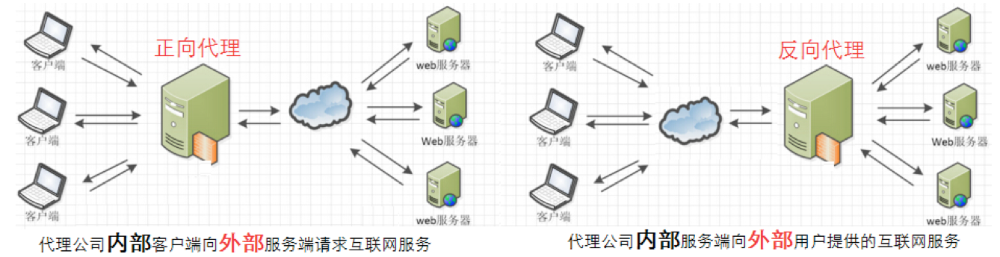
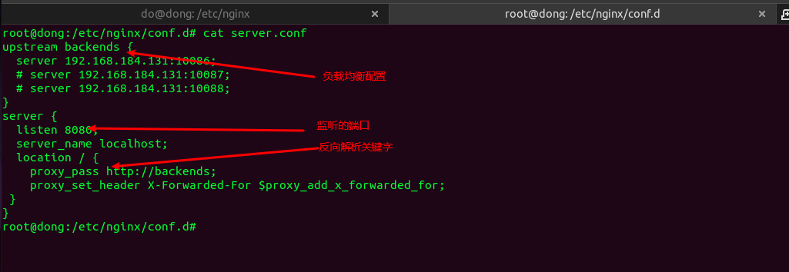
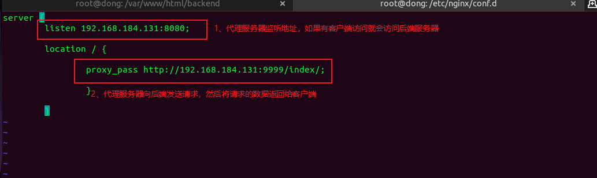
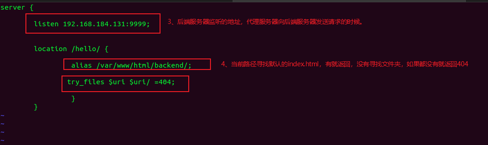
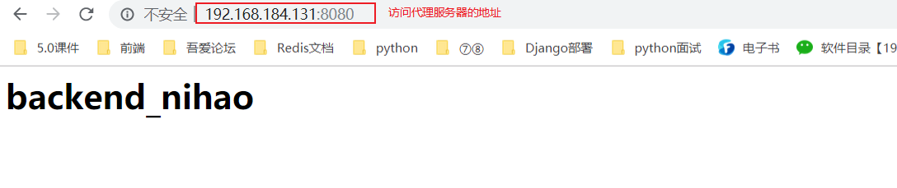
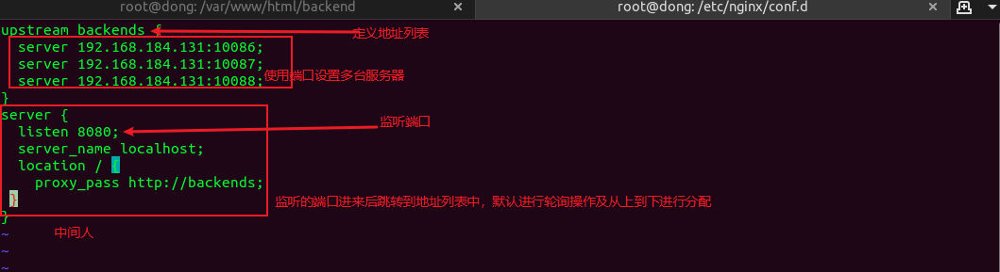
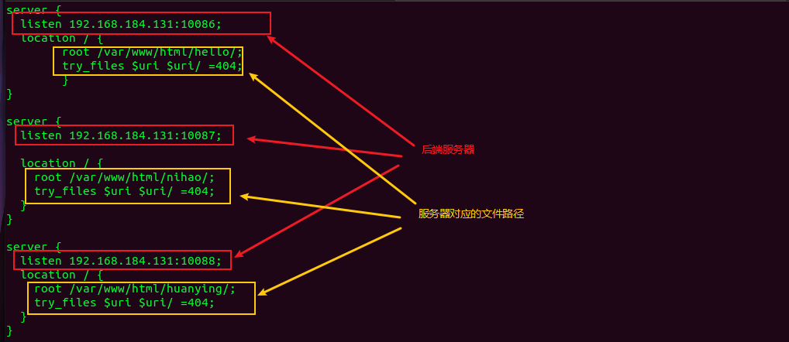
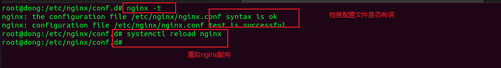
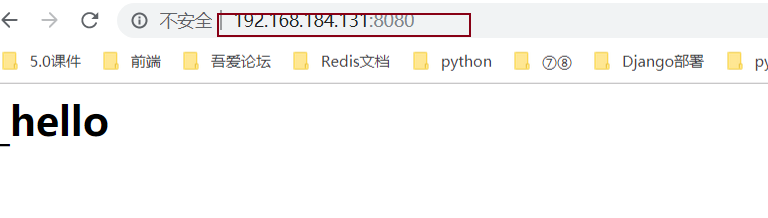

Nginx安装
- 安装Nginx
# nginx 所需的依赖包
apt-get install -y build-essential libssl-dev libtool libpcre3 libpcre3-dev make openssl zlib1g-dev
# 安装nginx
apt-get install nginx -y- 检查效果
netstat -tnulp | grep nginx
- 服务相关命令
# 启动nginx服务(start stop)
systemctl start|stop|reload|... nginx
/etc/init.d/nginx start|stop|reload|...
/usr/sbin/nginx ... -s stop|reload
# 查看信息
nginx -V
nginx -v
# 检查配置文件
nginx -t # 检查默认配置文件
nginx -t -c file.conf # 指定配置文件进行检查- 移除相关命令
# 查看和nginx相关软件
dpkg --get-selections|grep nginx
# 移除nginx，包括相关文件
apt-get --purge remove nginx
apt-get --purge remove nginx-common
apt-get --purge remove nginx-core- 访问nginx服务器

nginx配置参数
全局配置段
主要是全局性的和服务级别的属性配置（ /etc/nginx/nginx.conf ），常见的主要有以下几种设置：
user # 设置使用用户(worker)
worker_processes # 进行增大并发连接数的处理 跟cpu保持一致 八核设置八个
pid # nginx服务启动时候pid
events # 定义事件相关的属性
worker_connections # 一个进程允许处理的最大连接数
use # 定义使用的内核模型http配置段
主要配置server通用的一些配置：
include mime.types; # 文件扩展名与文件类型映射表
default_type application/octet-stream; # 默认文件类型
sendfile on; # 开启高效文件传输模式。
autoindex on; # 开启目录列表访问，合适下载服务器，默认关闭。
tcp_nopush on; # 防止网络阻塞
tcp_nodelay on; # 防止网络阻塞
keepalive_timeout 120; # 长连接超时时间，单位是秒
gzip on; # 开启gzip压缩输出server配置段
server {
listen <ip>:<port>; # 127.0.0.1::8080
server_name <主机域名>; # localhost
...
}注：server配置段最重要的属性是listen和server_name，它们都是用于匹配并处理请求的。
1、listen属性
作用：定义server监听的ip和port，当ip和port匹配时候才进行下一步匹配。
| 形式 | 描述 | 示例 | 完整示例 |
|---|---|---|---|
| ip:port | 地址精确表示样式 | listen 10.10.10.10:99 | listen 10.10.10.10:99 |
| ip | 自动监听 ip:80地址 | listen 10.10.10.10 | listen 10.10.10.10:80 |
| port | 自动监听 全地址:port | listen 99或 [::]:99 | listen 0.0.0.0:99 |
| default_server | 自动使用默认的地址 | listen default_server | listen localhost:80 |
匹配原则：首先将所有样式补全成ip:port，然后匹配，如果匹配server多，那么接着使用server_name匹配。
2、server_name属性
作用：定义server监听的域名，当域名匹配时候才进行下一步操作。
| 格式 | 完整样式 | 前缀正则样式 | 后缀正则样式 | 禁止非法域名或IP |
|---|---|---|---|---|
| 形式 | www.example.com |
*.example.com | www.example.* | _ |
使用原则：
优先使用完整样式，然后使用前缀正则样式，最后使用后缀正则样式，如果正则样式相同的时候，匹配最长，否则就走非法规则。 非法域名/IP，表示请求到该主机上一个不存在的IP或者域名。
3、root属性
作用：定义客户端请求的html文件所在目录路径。
表现形式：root /var/www/html;
4、index属性
作用：定义客户端请求时默认返回的文件。
表现形式：index index.html index.htm index.nginx-debian.html;
location配置段
location主要是根据server匹配到的请求路径去处理和响应。
前提： 根据请求完整url，获取uri(即：除了域名(IP)、Port和路径参数之外的部分)，用于location匹配。
# optional_modifier是匹配条件，location_match是匹配的样式，{}是要执行的操作。
location optional_modifier location_match {
# 执行操作...
}1）匹配规则
| 类型 | 含义 | 匹配方式 | 优先级 | 样式 |
|---|---|---|---|---|
| = /路径 | 精确匹配 | 前缀 | 1 | location = /image {} |
| ^~ | 优先匹配 | 前缀 | 2 | location ^~ /page {} |
| ~ | 普通正则-大小写敏感 | 正则符号 | 3 | location ~ .(jpe?g)$ {} |
| ~* | 普通正则-大小写不敏感 | 正则符号 | 3 | location ~* .(jpe?g)$ {} |
| 空 / | 通用匹配 | 前缀 | 4 | location / {} |
| 空 <路径> | 前缀匹配 | 前缀 | * | location /index {} |
优先级：精确匹配>location 完整路径>优先匹配>正则匹配>location 部分路径>通用匹配
2、location核心动作
1）指令语法
try_files file ... uri
try_files file ... =code作用：响应时按顺序查找file，找到则返回file内容，否则的话进行内部重定向(uri)或返回状态码(code)。
2）常见示例
# 如果能找到指定的uri那么就返回相应的内容，否则的话返回错误状态码404
location / {
try_files $uri $uri/ =404;
}
# 如果能找到指定的文件1/2.html那么就返回相应的内容，否则的话返回6.html文件内容
location / {
try_files 1.html 2.html /6.html;
}
# 如果能找到指定的uri那么就返回相应的内容，否则的话就内部重定向到后端名称为@backup的location
location / {
try_files $uri @backup;
}
location @backup {
# ...do something
}注意：如果最后一个地址是一个uri的话，那么这个uri必须是存在的，否则的话就出事了。
location常见操作
在location内部常用的功能属性非常多，常见的基本属性、临时跳转、目录列表等。
1）基本属性
location / {
# 指定响应请求的文件所在路径
root /var/www/html;
# 指定响应请求的默认文件名称
index index.php index.html index.htm;
# 指定响应请求的文件浏览器缓存过期时间，一般用于静态文件
expires 7d;
# 如果root指定的路径下有查找的文件，就返回，否则报404
try_files $uri $uri/ =404;
}2）临时跳转
location = /test/ {
return 302 http://www.itcast.cn/;
}3）目录列表
location /upload {
# 指定查看文件列表路径(绝对路径)
alias /var/www/upload/;
# 开启目录自动索引
autoindex on;
# 默认on，显示文件确切大小(bytes)。off表示显示文件的大概大小(kB/MB/...)
autoindex_exact_size off;
# 默认off，显示的文件时间为GMT时间。on表示显示文件的服务器时间
autoindex_localtime on;
}备注说明：
# root 表示 location 匹配内容的相对路径
# alias 表示 一个绝对路径
效果一： 效果二：
location /txt/ { location /txt/ {
alias /var/www/txt/; root /var/www/txt/;
} }
# 效果一：访问http://localhost/txt/1.txt，nginx找/var/www/txt/1.txt文件
# 效果二：访问http://localhost/txt/1.txt，nginx找/var/www/txt/txt/1.txt文件Nginx 反向代理

location / {
# 设定请求跳转后的地址，可以使用hostname或ip:port形式
proxy_pass http://localhost:8000;
}
proxy_pass指令设置被代理服务器的地址和被映射的URI，地址可以使用主机名或IP加端口号的形式。
location /html/ {
配置1：proxy_pass http://proxy.com;
配置2：proxy_pass http://proxy.com/;
}nginx反向代理实践
1）代理服务器的配置文件
# vim /etc/nginx/conf.d/proxy.conf
server {
listen 172.16.179.130:8888;
location / {
proxy_pass http://172.16.179.130:9999/hello/;
}
}
2）后端服务器的配置文件
# vim /etc/nginx/conf.d/backend.conf
server {
listen 172.16.179.130:9999;
location /hello/ {
alias /var/www/html/backend/;
try_files $uri $uri/ =404;
}
}
3）准备后端服务文件
# 创建路径中的文件夹，并创建默认的index.html文件
mkdir -p /var/www/html/backend/
# 写入数据
echo '<h1>proxy_backend</h1>' > /var/www/html/backend/index.html4）检查nginx配置后重载服务
/usr/sbin/nginx -t
systemctl reload nginx
netstat -tnulp | grep nginx
负载均衡
基本配置
# upstream主要是定义一个后端服务器地址的列表，每个后端服务器使用一个server命令表示。
upstream backends {
server [域名|ip]:port;
server [域名|ip]:port;
server [域名|ip]:port;
...
}
server {
location / {
proxy_pass http://backends;
}
}
"""down：表示当前server主机暂时不参与负载均衡。backup：后备主机，当所有非backup机器出现故障或者繁忙的时候，才会请求backup机器。max_fails：允许请求的最大失败数，默认为1，配合fail_timeout一起使用.fail_timeout：经历max_fails次失败后，暂停服务的时间，默认为10s。"""
# upstream {} 和 server {} 两部分内容属于平级关系。
# upstream主要是定义一个后端服务器地址的列表，每个后端服务器使用一个server命令表示。示例



